Main Main
News
Archives
Downloads
Cold
Ice MOD
Members
Allies
Links
Join
Us
POTWYou are Visitor #

|
| |
WOLFPAC
CLAN
Archives
WEEK
OF 4TH OF JUNE
| 6/11/1999
9:51PM |
| Hola.
I got a quick pic to post tonight. There
you have it, a rocket launching
rocket-rat dropper :). Doesnt make sense?
Hell, I dont even know if it does. **Oh,
this gun is included in Alpha version
.6** 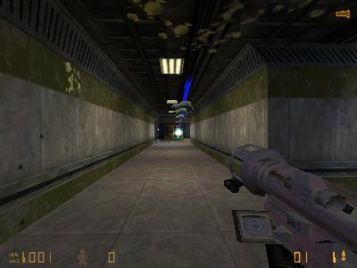
|
| 6/11/1999
7:31PM |
| Hello!
Because I feel so saucy tonight, Alpha
version .6 will be released. Yes, its
server sided, and alot of coding is done.
Download it here! Yes,
it includes an automatic installer. |
| 6/11/1999
6:34PM |
| Hey,
just wanted to inform you all that we got
a new logo. Check it out above. I've
worked hard on this one. :) |
| 6/11/1999
3:04PM |
| Hey
peeps. I got some news for ya all. Half
life.ORG will
post info about our MOD. Just give them a
couple of hours :)
JailBreak
1.1 has been released. Grab it at our downloads page.
Well,
today C++ should be coming through the
UPS service. Damnnit where is the shit?
:). Oh and the MOD... Sting has just
finished scientist arrows. (WTF? :)
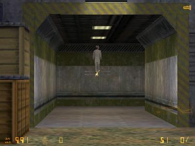
Oh
and Cold Ice .6 will feaure a automatic
installer. Kewl huh?
|
| 6/10/1999
9:16PM |
| Hey,
I got this MOD named "Morbid
Inclination" get it here or get
it at our downloads page. Oh and
tomorrow we will add a 3 arrowed crossbow
into the code. Also Sting is going to
make a wacked mp5. :). Pics will be ASAP.
One
last Note. Sion has quit wolfpac because
of his location and his ping. See ya
Sion!
|
| 6/10/1999
6:04PM |
| Ok, I got the
pics right here! The silenced
glock..Cluster grenades and a special
addition, Magnum explosive tipped shells
:). 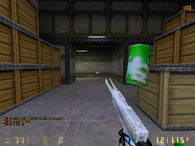
Oh damn Gina! A silenced glock will now
be added to Cold Ice .6
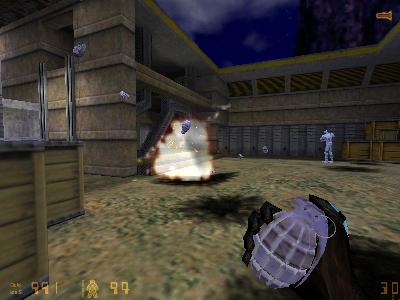
See those extra grenades flying in the
air.. :)
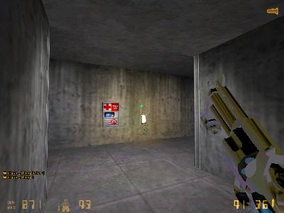
The right way to smack down any bitch.
|
| 6/10/1999
4:00PM |
| Just
a small update at this hour. Sting is
currently working at adding a silenced
glock and cluster grenades into the MOD.
OHH, very original :). Well hes hard at
work and im still waiting for my copy of
C++. So im going to sit tight till
tomorrow. Damnnit, I think I hear the UPS
truck coming now... I will
get the pics here ASAP :)
|
| 6/9/1999
6:39PM |
| I
just got a .avi move of the NEW RPG
launcher. Download it here. Bat.zip
Oh
and I added gamespy 2.1 on the downloads
page. Grab it here. Also
MP3Spy is posted @ the downloads page.
A
movies section is now located in the Cold
Ice MOD html.
|
| 6/9/1999
3:40PM |
Hola muchachos!
Well today I've got some more crazy pics
of our mod called Cold Ice. Im thinking
about changing the name because all this
crazy coding doesnt relate to the name.
Maybe "High on Coke"?
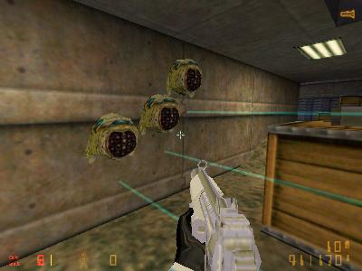
Umm.. what happened to the claymores?
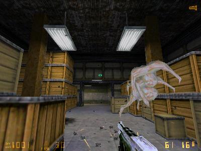
YES! handcannon Baby!. (Thanks Wavelength
:)
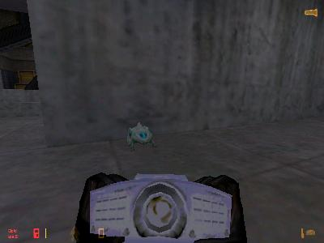
Ahh, a cute little chumtoad. Awww :)
Oh,
I've added a coding pics section in the
Cold Ice .html. Check it out here.
Also..The old news of this week has been
moved to the archived section.
|
| 6/8/1999
5:41PM |
| Heya.
I got a busy schedule tonight, so enjoy
these awesome pics from our kewl coder,
sting. (Actually, he sucks :-) ) 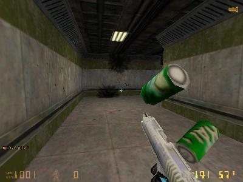
Hmm, bust a cap in someones ass and get a
cool can of coke?
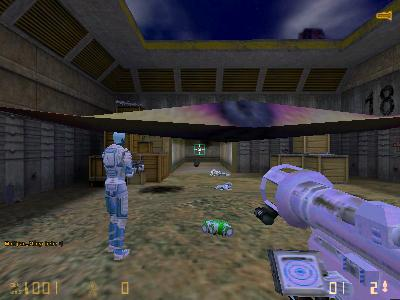
You sure these RPG launchers are ATF
certified?
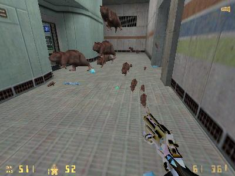
Hey!
What the HELL happened to the snarks?
Oh,
and I got great news. I just order C++
6.0 from CompUSA. Hehe, its coming
through the mail in 2 days. I should ave
it on friday :)
And
on a final note. I have now added a pic
of the week section of the Wolfpac Clan.
Take a look here or
click on the pic on the sidebar. And the
RANKS links are on the members html.
|
| 6/8/1999
6:38AM |
| Hello
all. I just woke up! Well to my surprize,
OZ
deathmatch 1.3 is now
out and HLMM .6 BETA is out too. HLMM is a
Menu Text editor for you MOD makers out
there :). Pick up these files at our Downloads page. |
| 6/7/1999
7:48PM |
Another example
of a C++ coder gone wild with the snarks!
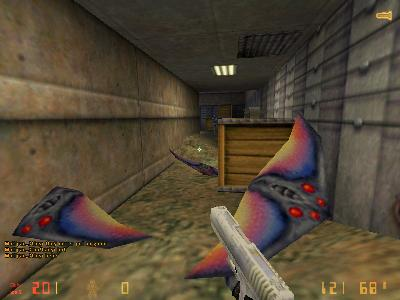
Damnnit, what the hell is wrong with us.
We get a kick out of stupid shit. Heheh!
|
| 6/7/1999
6:25PM |
| Hello!
Well, I guess the Beginning of this MOD
starts now. Becase today me and Sting
were fooling around with the coding.
Hehe, we got a big kick out of brneys
flying all over the place. You can Say
now that Microsoft Visiual C++ is a
awesome program that any thing is
possible, ANYTHING. 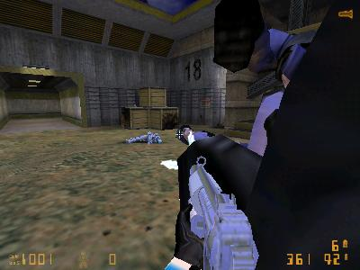
Haha,
shells swapped for barneys. WTF?
Awesome, I just
cant wait to my copy of C++. Damn you
Sting :)
|
| 6/7/1999
2:55PM |
| Hello
all, just got back from High School. :).
As far as the Cold Ice MOD is concerned..
Im waiting for Microsofts Visual C++ 6.0
to be in stock so I can buy it. I have
the money my hand, but the guys at
Staples (a office store) had to be out of
stock. But currently Im modifing the
source files but I can't compile them!
Ahh shit. Oh and
the people that think this isnt a MOD.
Well, it is. Why you ask? Because I did
MODIFY the files from the original half
life pak. And I did MODIFY the sound
files in the orginal pak.
Even
though no coding has been implimented,
this is a MOD. But it will be a FULL MOD
when the first coding source will be
released with the next version of this
MOD. I Just wanted to get that straight
with the idiots that Flame me @ PHL's
Forum
There
one more big topic today. Clan BMSC wants
Wolfpac to merge with them. Well, all I
can say is that we wont merge but will be
allies against the stupid assholes named REZIN
POSSE. They
are totally against REZ and are nice
guys. And they kick ass too. :)
Oh
DAMMNIT! As I was writting this news
section my cable is out. Must be the
server near by. So this page wont be post
till by cable comes back up.
One
last thing! Check out the new allies page
in the side bar. :)
|
| 6/6/1999
5:00PM |
Ok,
Last night and today was the best time I
ever had. Boy, TFC and HLDM to the max! I
got two pics below.
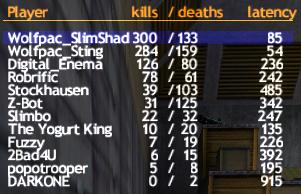
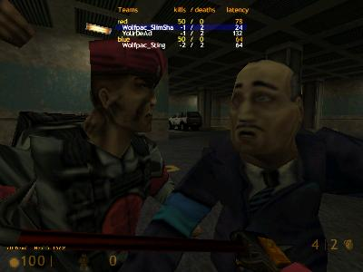
Hahahaha! See ya
tomorrow! Oh on a final note
|
| 6/5/1999
7:24PM |
| Oh
guys, Lets forget what I said the release
date of Cold ICE but..... I have worked
my ass off for the first BETA of the MOD
Cold Ice. Oh yes, you can download it.
Get it here. IceBETA5.zip
Read
below.
===================================================
Cold Ice
v .5 BETA
http://members.xoom.com/Wolfpac_Clan/
6/5/99
Cold Ice only runs on version 1010 of
half-life or newer.
===================================================
---Description---
Cold Ice is a MOD that changes the
appearance of all of the .mdl files into
a negative format. Thus leading to a
white, blue and pink appearance. Cold ice
also changes some the of .wav files for a
new and fresh sound to most of the
weapons. Some were mixed using
Microsoft's recorder program and Creative
Wave Studio 4.02. This MOD will have a
few updates or patches because there will
be c++ programming involed. This is so
because if you don't have the ice.dll
included with the .pak file, you can not
join a Cold Ice server. This MOD is based
independently on the .pak file where all
based files run on Cold Ice and the
cl_dll name "Frozen". Frankly,
I didn't intend to make a MOD but because
of fooling around with a .mdl viewer,
I've decided to develop this MOD. This
MOD is only made for the enjoyment of
seeing a fresh new look and sound to the
awesome game of Half-life.
-Thanks Valve for blessing us. :-)
===================================
Installation
- Just unzipp this files to
C:\SIERRA\Half-Life\ and click on the
Ice.Ink file to launch.
===================================
Remember, this is only a beta, it was
tested but may have a few bugs. any
resolution under 640X480 will not have
the modified HUD visiuals. This will be
done in the final version of this MOD.
Also, the models weapons are not skinned.
These are the only models that arent
"frozen". But will be completed
in the final version.
Some other .wav files will be finished in
the final version 1.0
One other note. "Iceman and
Icewoman" are models included with
this MOD.
=================================================
Programs Used.
============
MDL Viewer version 2.1
Creative Wave Studio 4.02
Paint Shop Pro 5.0
Windows Paint :)
Sprite Wizard by Wavelength
Sprite Viewer 1.05
Microsoft Visual C++ 6.0
Valves SDK
================================================
Please contact us with ideas, bug
reports, or general fan mail;-)
Questions? Comments?
Wolfpac_SlimShady
-Skinner,Programmer,Modeler,Sound Editor,
Webpage Design
darcuri@optonline.net
ICQ# 27868131
Wolfpac_Sting - Founder of Wolfpac
Sting1313@hotmail.com
ICQ# 31008941
=================================================================
Hey, If it wasn't for Clan Wolfpac. This
MOD would of never of happened.
=================================================================
---{Wolfpac_SlimShady}---
Clan Wolfpac hopes you enjoy Cold Ice!
|
| 6/5/1999
1:15PM |
| Good
afternoon all. Today, Wolfpac had its
weekly practice. Today was TFC. In my
opinion.. TFC just sucks. But the clan
had a fun time anyway. :) The
Downloas page is updated with all the
ulits you need to edit files for Half
life. Also, the members page is updated
with Sions personal info and Babel has
been added to the list.
As
for the MOD, I will post up more files
later today after I finish editing them.
In about 12 days this MOD will be
released and will be posted at fileplanet
and on this page, of course.
|
| 6/4/1999
11:16PM |
| This
news is just a quick notice, but I would
like to inform everybody that we are now
ranked by CLQ. Check out the side bar and
click on our names for our stats. |
| 6/4/1999
8:16PM |
| As
of today.. Well today was a slow day, but
I got some good news. I have 2 new pics
of the crossbow and in game snark pic.
Also I have a new Soundfx of a line
ripped for the movie "Full Metal
Jacket" crossbow.jpg
inviewsnark.jpg
gunpickup2.wav
Also,
I've added a archives section for the old
news. Each week, the news you will see
here will be transported to the archives
section. You can go there by clicking the
"News Archives" in the side
bar.
The
Cold Ice MOD HTML is updated now.
On
a final note, today was my birthday. I
had alot of cake and food and I'm stuffed
to the gills :)
|
| © 1999
Wolfpac_SlimShady. All Rights Reserved. |
|
|
{kind=link}
{kind=link}